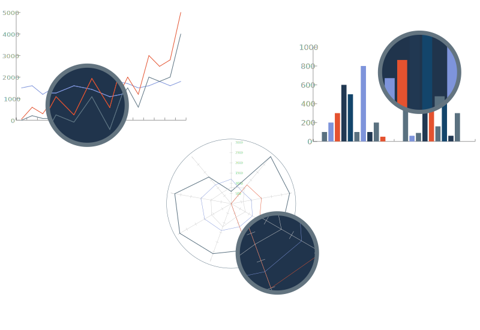
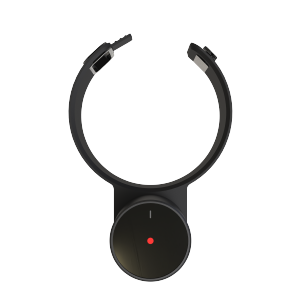
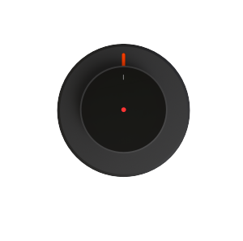
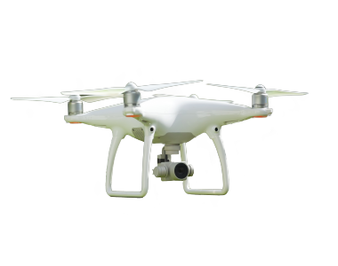
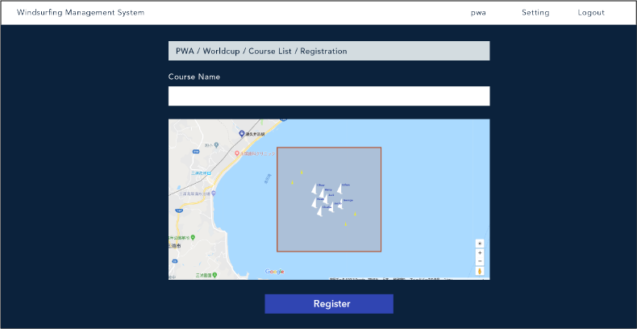
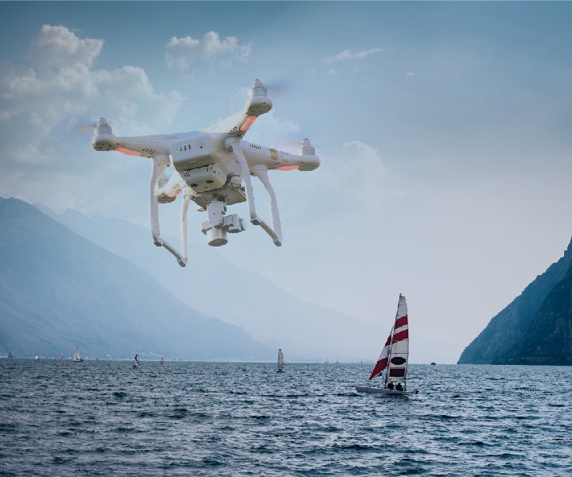
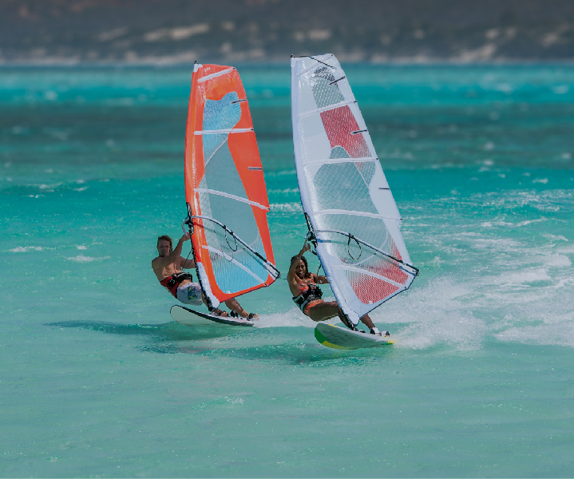

A trial is currently being conducted with some users. If you would like to make a purchase or get detailed product
information, please contact us with the address at the bottom of the page.
GULLCAST is a solution everyone can enjoy watching races more easy-to-understand.
Create a "watching experience " that anyone can enjoy
GULLCAST delivers immersive experience (3D) to audiences in real time. The audience will be able to enjoy windsurfing even
when taking place at a faraway sea.
Use the data of athletes and spectators for management
GULLCAST creates reports from all windsurfing data, such as surfer's data, wind direction, position, and spectator data.
The tournament is managed according to this data.


The sail sensor can be attached to your mast. It measures your performance by sensing the angle of sail operation.

The board sensor can be easily attached to the board, sensing its inclination and speed. Thanks to its small size, it does
not hinder maneuverability.

Ship & buoy sensor measures wind direction and start / goal point position.

By tracking wind surfers with a camera-equipped drone, it delivers immersive real-time video.

GULLCAST management system
GULLCAST supports every aspect for running windsurfing competitions. We provide an unprecedented tournament management
system including record of competition/player data, 3D relay of race, marketing report of audience/players.
GULLCAST apprication for spectator
GULLCAST senses data on athletes and the environment and delivers wind surfing races as real-time 3D images.
The audience can easily grasp the contents of the race and watch their favorite surfers freely.
1GULLCAST is full of content such as rules commentary, surfers' guidebooks
and event information
GULLCAST offers wind surfing rules and surfers' books, so that even people who are watching for the first time
can enjoy windsurfing.

2A drone relays the progress of the race in real time
By sensing surfers' data even in a remote oceanic race, we will reproduce the race in 3D. In addition, the drone
will deliver immersive video footage.

3 Create reports from spectator data
The solution will provide the results of analyzing the data of athletes and tourists as a report. This marketing
data helps you to smoothly manage your next event.
GULLCAST brings windsurfing tournaments closer to people
If you would like to make a purchase or get detailed product information, please contact us with the form below